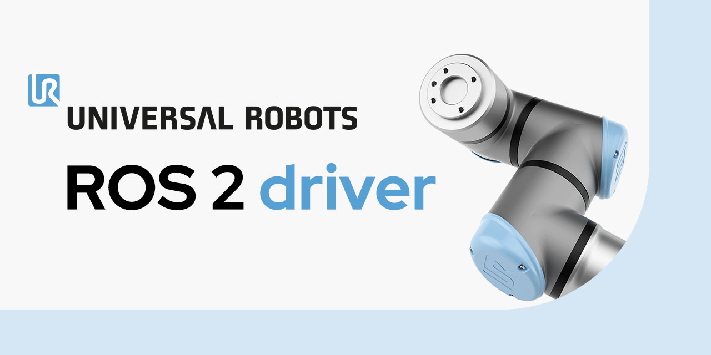

Welcome to the Universal Robots ROS 2 driver documentation
{kind=link}

This documentation covers everything around the Open-Source ROS (Robot Operating System) 2 driver packages for Universal Robots manipulators and the standalone Universal Robots Client Library (C++).
With those packages it is possible to control a Universal Robots arm from an external application either directly using a C++ API (see ur_client_library) or using ROS 2 (see ur_robot_driver).
This allows developing robot applications where one or more UR robots are a part of the complete application. Some key use cases are:
External Monitoring and Control: It allows you to monitor and control UR robots from an external application. This can be useful for tasks like external vision systems for part detection or external user interfaces to control robot programs.
Ease of Use: The ur_client_library has minimal external dependencies, primarily relying on standard C++ libraries, making it straightforward to integrate and maintain.
Integration with ROS / ROS 2: The ur_client_library serves as the foundation for the ROS 2 driver, making it easier to integrate UR robots into ROS-based systems. ROS supports multiple programming languages, primarily C++ and Python, making it easier to integrate with other systems and tools. It also allows for communication between different nodes, enabling complex robotic systems. The Universal Robots ROS packages offer everything from Visualization, over simulation up to controlling a real robot bridging the great work of the ROS community with Universal Robots manipulators.
Note
There is also builtin ROS 2 support for PolyScope X robots, see the PolyScope X ROS 2 documentation for details, or ROS 2 integration paths for an explanation of the difference from the ROS 2 driver documented here.
Table of Contents
- ur_client_library
- Build / installation
- Setup a robot
- PolyScope version compatibility
- Library architecture
- Usage examples
- Dashboard client example
- Force Mode example
- Freedrive Mode example
- Instruction Executor example
- Primary Pipeline example
- Primary Pipeline Calibration example
- RTDE Client example
- Script command interface
- Script Sender example
- Spline Interpolation example
- Tool Contact example
- Torque control example
- Trajectory Joint Interface example
- Example driver
- Setup for real-time scheduling
- Migration notes
- C++ API Reference
- ur_description
- ur_robot_driver
- ur_calibration
- ur_controllers
- ur_moveit_config
- ur_simulation_gz
- Tutorial examples
- Migration Notes
- Build status
- ROS 2 integration paths